In this section, we will go through some of the cloud service providers which offers the functionality of hosting and serving a static website.
This is the multi-page printable view of this section. Click here to print.
Static mirror hosting
A guide on hosting the static mirror on various platforms.
1 - Hosting on Amazon S3
A guide on hosting a static website on Amazon S3.
Required expertise level : Intermediate
Platform : Any
Last tested and confirmed : January 2022
Amazon S3 (Amazon Simple Storage Service) is a data storage service and one of the Amazon Web Services (AWS)
S3 provides object storage service, which means that data is stored and addressed as objects, each object contains it’s own data in addition to meta-data and a unique identifier.
Object storage is often used to store big amounts of data that doesn’t need the features and structure of the file systems hierarchy.
The main advantage of using S3 to host our static mirror is the ability to serve a fully functional “static” web pages directly from Amazon S3 URLs which consists of [bucketname]+[endpoint] or [endpoint]/[bucketname] ex: mybucket.s3.us-east-2.amazonaws.com or https://s3.us-east-2.amazonaws.com/mybucket
Configure static site hosting on S3
Creating S3 bucket, and setting configurations for Static Site hosting
- First, you need to create an account on Amazon Web Services (AWS), and then, sign in to AWS Console.
 AWS login page
AWS login page
- In S3 management console, create a new bucket.
 S3 management console
S3 management console
Note
You should pick a unique name for your bucket. S3 new bucket
S3 new bucket
- In Set permissions tab, uncheck Block all public access, and confirm that you want to enable public access to the bucket.
 Bucket permission tab
Bucket permission tab
- Finally, review your options and create the new bucket.
 Create bucket
Create bucket
- Your newly created bucket should appear in this form.

- Head to the new bucket’s settings by clicking on the bucket name.
 S3 bucket settings
S3 bucket settings
- In Properties tab click on Static website hosting
 S3 bucket Properties
S3 bucket Properties
- After setting Use this bucket to host a website, you need to set the path for your
index.html(main page), optionally you can set a customerror.htmlpage, and click save.
 S3 Static website hosting
S3 Static website hosting
 S3 enabled Static website hosting
S3 enabled Static website hosting
Now, we need to set the bucket permissions policy to allow public read for all objects.
- Head to Permissions tab, and click on Bucket Policy.
 S3 bucket policy
S3 bucket policy
- The simplest form of static website hosting policy on S3 should look like this.
{
"Version": "2012-10-17",
"Statement": [
{
"Sid": "PublicReadGetObject",
"Effect": "Allow",
"Principal": "*",
"Action": [
"s3:GetObject"
],
"Resource": [
"arn:aws:s3:::example.com/*"
]
}
]
}
Note
In this example bucket policyexample.com is the bucket name. To use this policy example you need to replace example.com with your newly created bucket name in the "Resources" key value.
Now, we are ready to upload our static mirror to our S3 bucket.
Upload using the Web user interface
- You will find the upload option in the bucket settings page.
 S3 files upload
S3 files upload
- Make sure grant public read access to the uploaded files in the permissions tab.
 S3 files upload permissions
S3 files upload permissions
Note
While you can easily upload your website files directly in the browser by clicking on Upload in the bucket settings page, it’s preferred to use AWS CLI, specially if when you are uploading large websites.Install AWS Command Line Interface
-
MS Windows
- Download and install the official installation file
- Install using Chocolatey windows package manager
choco install awscli
-
Gnu/Linux
- Normally, you will fine AWS CLI package available in your distribution software repositories, in that case you can simply use your package manager to install it directly. ex:
apt install awscli - If that’s not the case, you can install it manually by executing these commands in your terminal in their respective order.
- Normally, you will fine AWS CLI package available in your distribution software repositories, in that case you can simply use your package manager to install it directly. ex:
Linux x86 (64-bit)
curl "https://awscli.amazonaws.com/awscli-exe-linux-x86_64.zip" -o "awscliv2.zip"
unzip awscliv2.zip
sudo ./aws/install
Linux ARM
curl "https://awscli.amazonaws.com/awscli-exe-linux-aarch64.zip" -o "awscliv2.zip"
unzip awscliv2.zip
sudo ./aws/install
- macOS
- Install using Homebrew package manager.
brew install awscli
- Install using Homebrew package manager.
Upload using AWS CLI
- First, you should configure
awscliand grant it access to your AWS account, for that you will need to get your AWS Access Key ID and Secret Access Key, you can create new Access Keys by going to AWS IAM (Identity and Access Management) Dashboard.
Alert
Make sure to store the generated keys securely and don’t share them over unsecured medium, the keys can be used to gain access to your AWS account data.awscli configure

-
ِMove to the website local directory.
-
Upload your files by executing replace [bucket-name] with the name of the bucket you created on S3
aws s3 sync . s3://[bucket-name]/
Now you can test your new static mirror, you’ll find the website URL in bucket settings > Properties > Static website hosting
 Find the configured URL for your website here
Find the configured URL for your website here
Note
Note that the provided URL here is http://mystaticwebsitetest.s3-website.us-east-2.amazonaws.com can only be accessed on plain-text HTTP protocol
Now, there are two different URL structures which allows accessing your static website on the secure protocol HTTPS
- Bucket name as a sub-domain
https://[mystaticwebsitetest].s3.us-east-2.amazonaws.com

- Bucket name in the path
https://s3.us-east-2.amazonaws.com/[mystaticwebsitetest]

Note
While both methods may achieve same results, it’s preferred in censorship circumvention context to include the bucket name in the path as in method number 2.
AWS uses a Wildcard SSL certificate which supports any sub-domain under *.s3.us-east-2.amazonaws.com, but defining the bucket name in the URL path would make it more difficult to detect traffic to this particular bucket/region/endpoint through Deep Packet Inspection(DPI)
2 - Hosting on Google Cloud Storage
A guide on hosting a static website on Google Cloud Storage.
Required expertise level : Intermediate
Platform : Any
Last tested and confirmed : January 2022
Google Cloud Storage is object storage service similar to Amazon S3, and it provides the ability to serve static web pages as well.
The main advantage of using Google Cloud Storage to host our static mirror is the ability to serve a fully functional “static” web pages directly using Google Cloud Platform URLs which usually looks like this: https://storage.googleapis.com/[bucketname]
Configure static site hosting on Google Cloud Storage
Creating GCS bucket, and setting permissions
- First, you need to create an account on Google Cloud Platform, you will need to create a Google account for this.
Note
While it’s possible to use a pre-existing Google account for this step, it’s better to create a new one just for this purpose.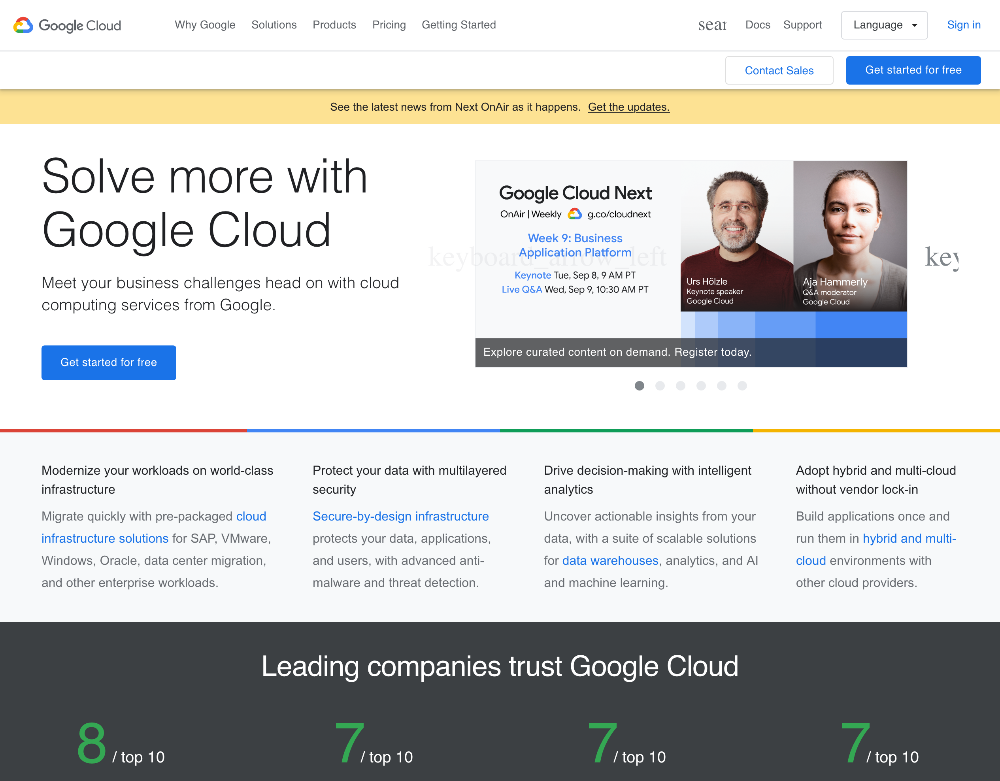
- Log in to Google Cloud Console using your newly created account.
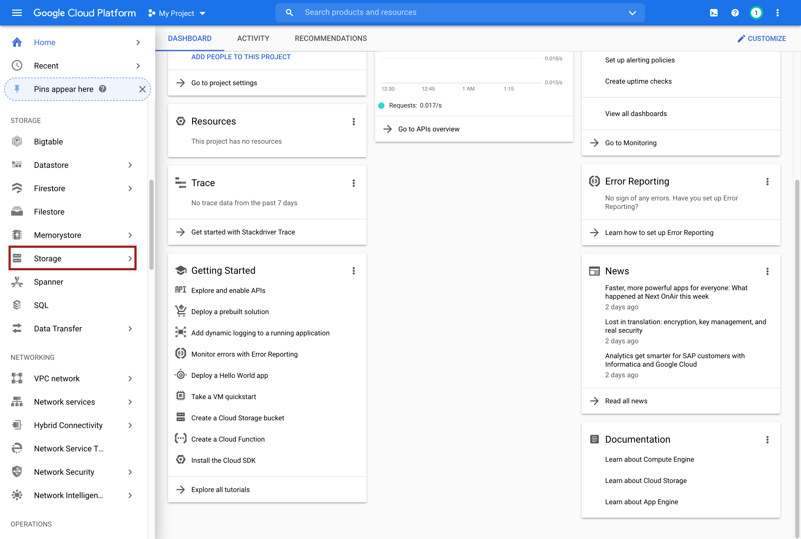
- Here, you’ll need to open Storage from the side bar to access Google Cloud Storage settings page.
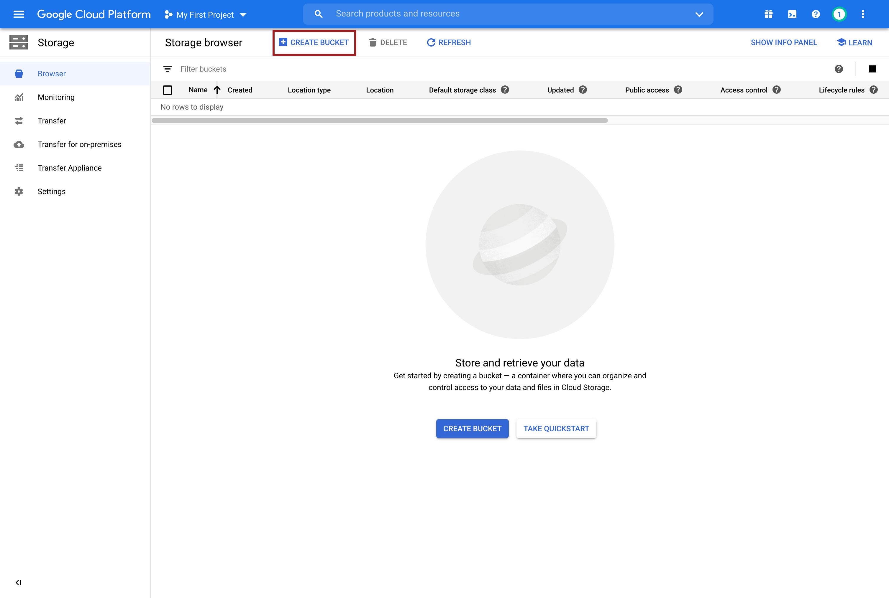Create a new bucket here
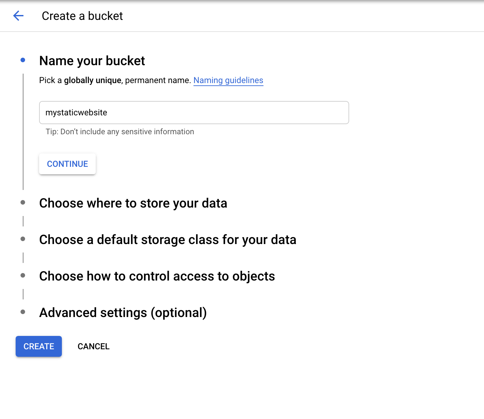Buck name
- First step will be choosing your bucket name, bucket names should be unique and you’ll use it to access your static website later.
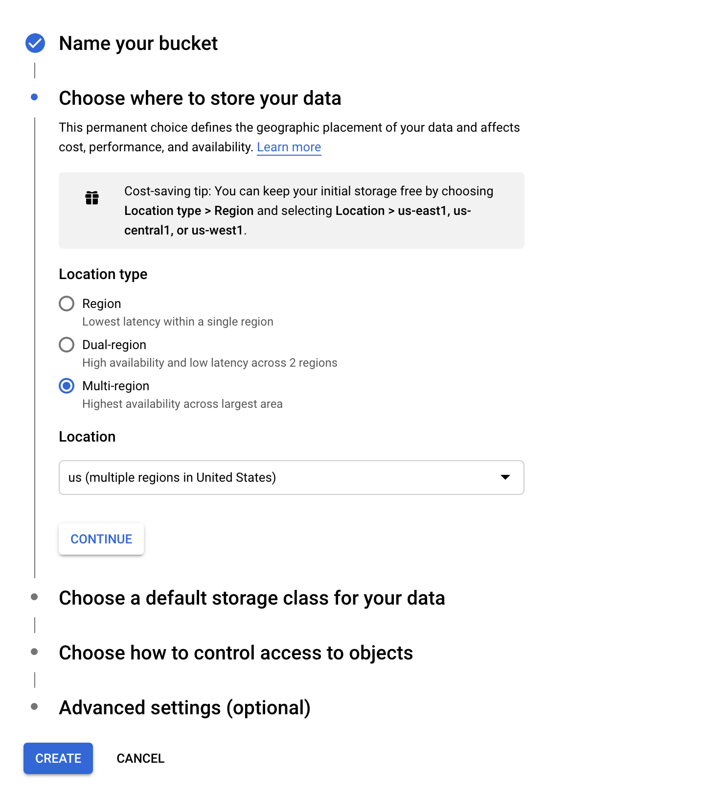Region settings
- Unless you know what you are doing, there is no need to change anything here.
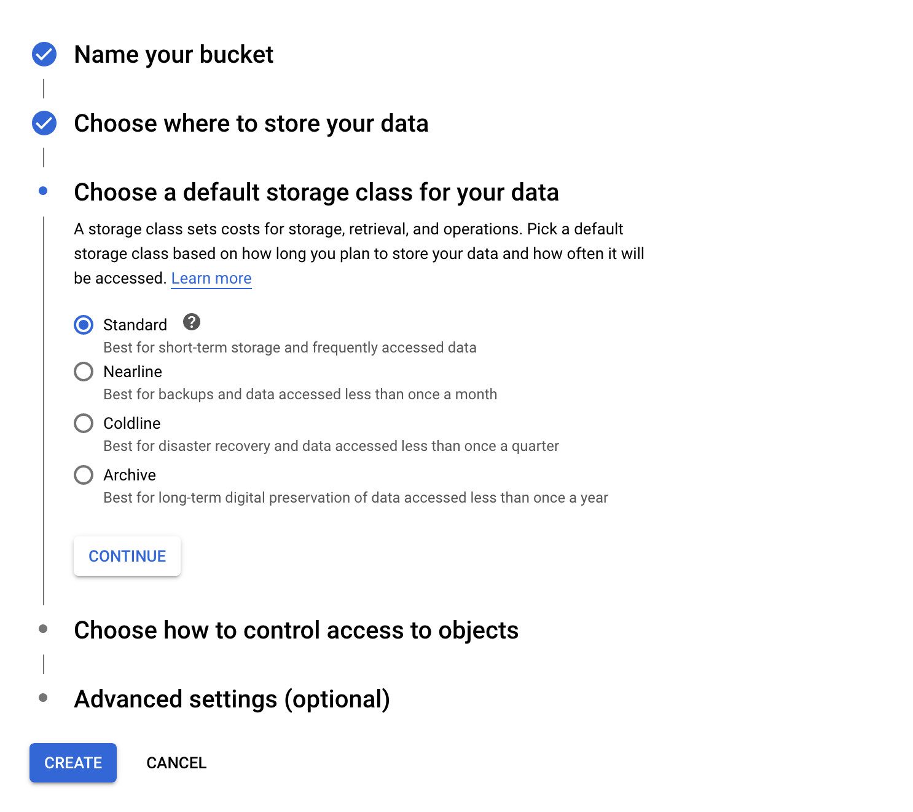Storage Class
- In most cases it should be Standard.
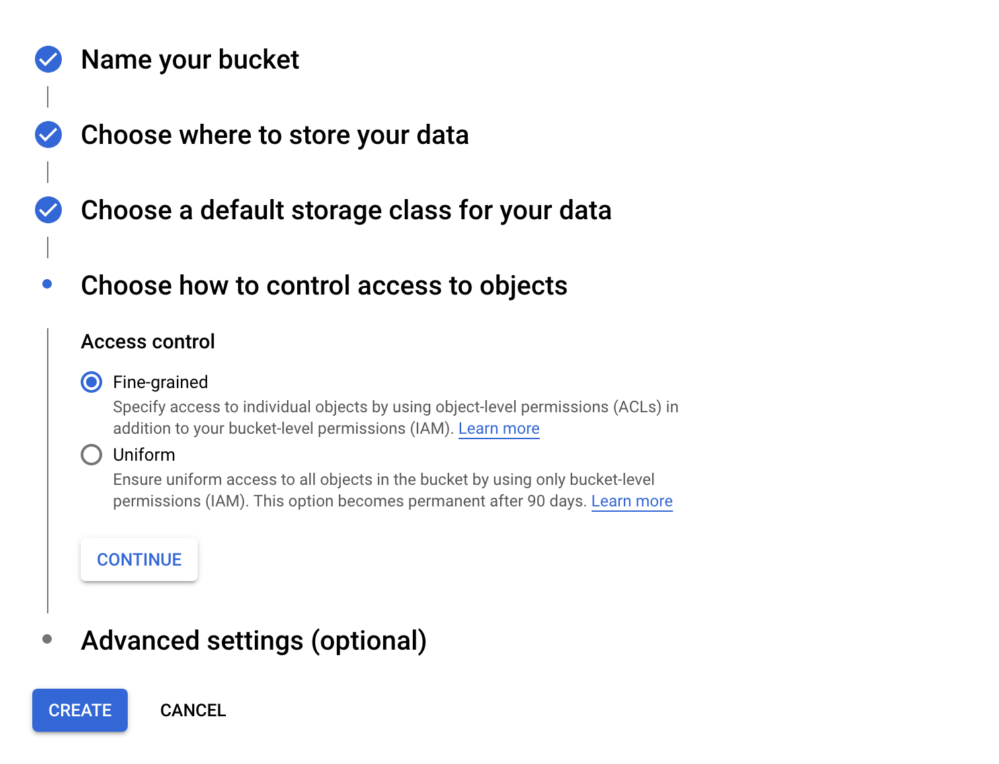Access control
- We will be handling permissions and access control configurations later on, so we’ll leave it unchanged for now.
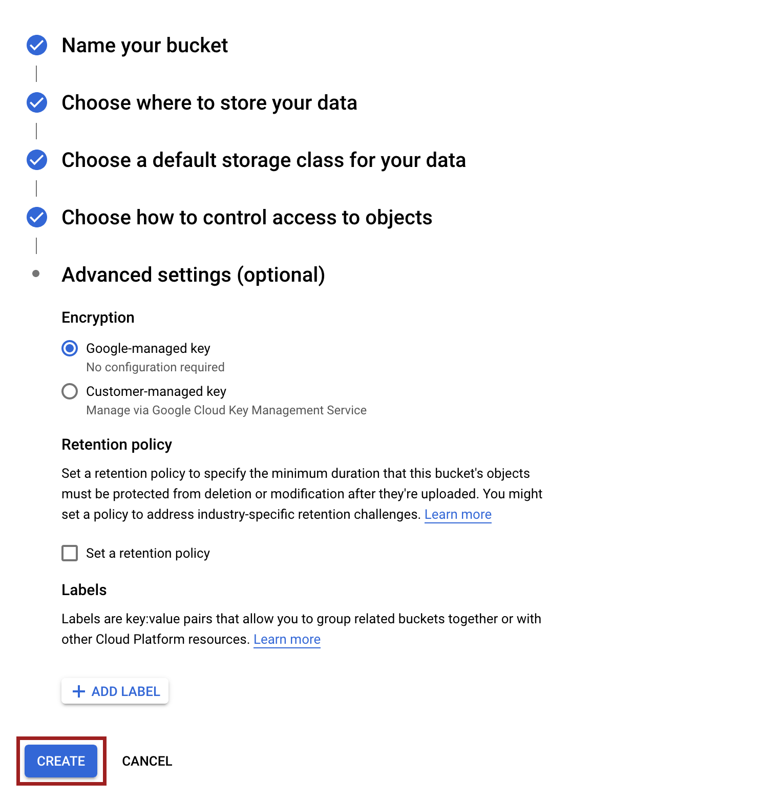Encryption
- As this bucket will be publicly available, we don’t need to change anything with Encryption settings.
Now, we can go proceed to the new bucket settings page.
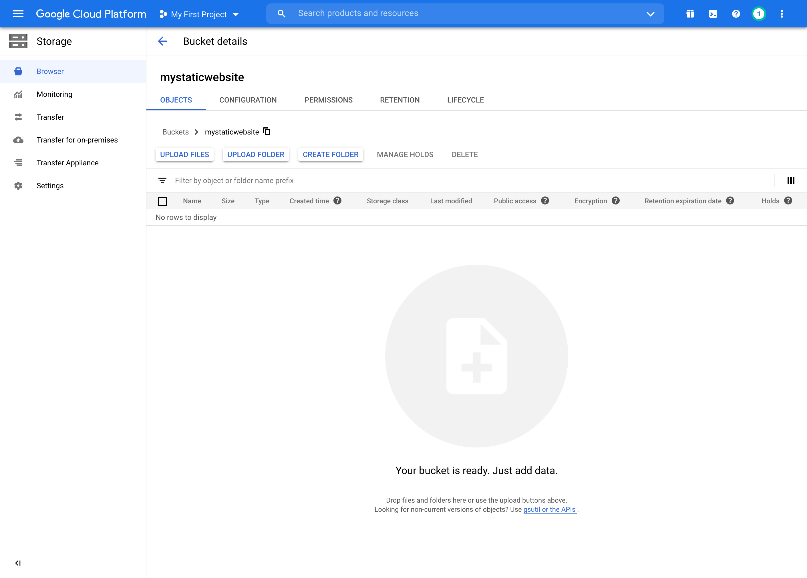
Upload the static website
While you can upload your static website using the web interface, it’s preferred to do that using Google Cloud SDK, specially if you are planning on updating your mirror with new content frequently.
Install Google Cloud SDK Command Line Interface
Installing Google Cloud SDK is pretty straight forward process. Simply, follow the instructions related to your operating system in this guide and you will be good to go.
Upload using Google Cloud SDK CLI
- After installing Google Cloud Sdk, you will need to authorize the local client to connect to you Google Cloud account, you can do that by opening your terminal and entering
gcloud init
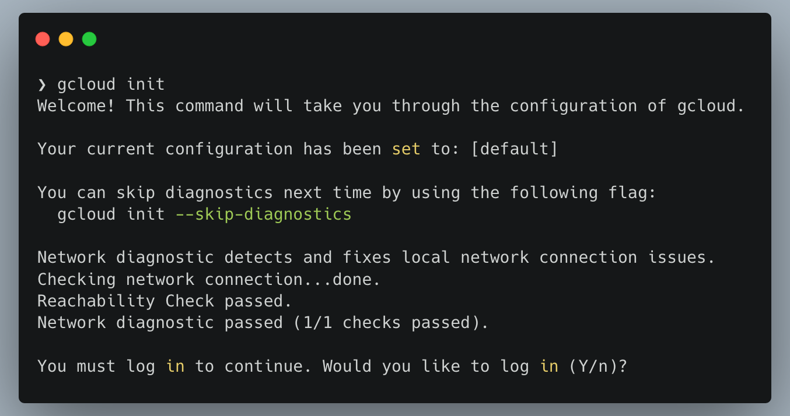
- After Successfully logging in to your account, you will be asked to select the project you want to use, if you didn’t create a new project you can do that now using the local CLI.
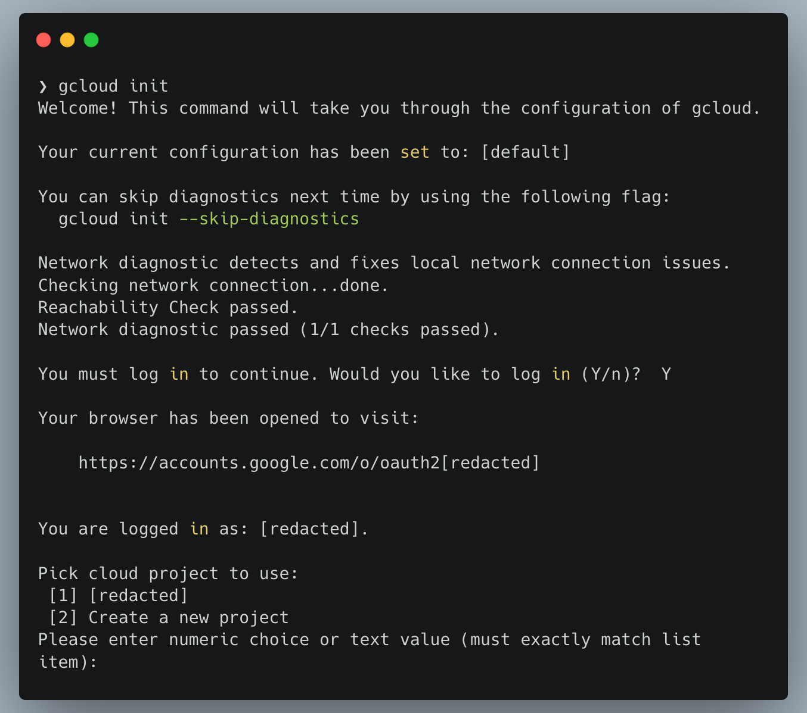
Now, you can use your local CLI to upload the static mirror to the newly created bucket.
- Using your terminal, change directory to the static mirror files location, and enter
gsutil rsync -R [local-dir] gs://[bucketname]
Note
Replace[local-dir] with the static mirror directory name and [bucketname] with the bucket name.
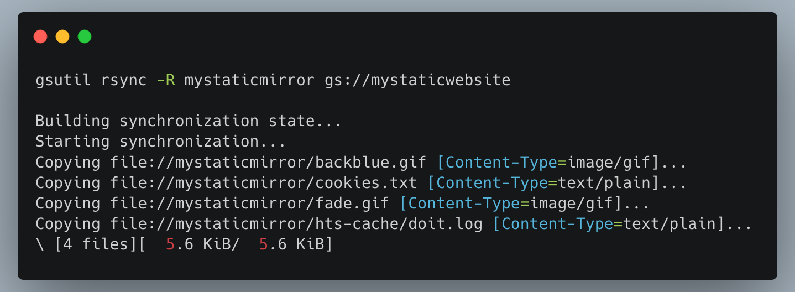Uploading files
- Now if you go to your bucket settings page, you will notice the static mirror files are uploaded.
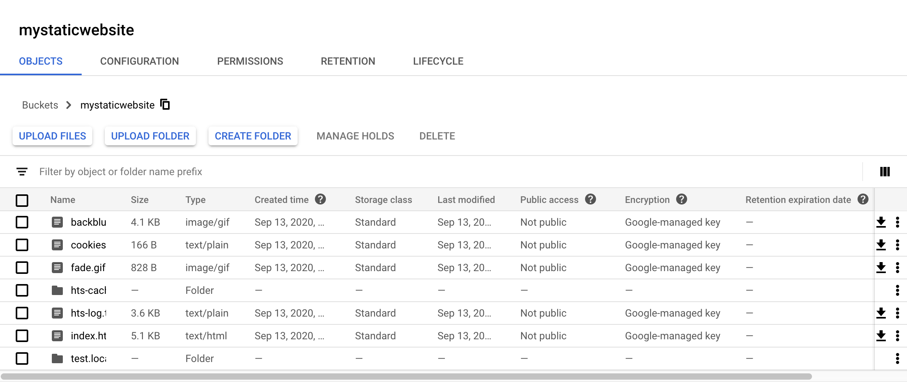
- Final step will be setting public permissions to the files so the static mirror will be accessible to public internet, you can do that using the local CLI by entering
gsutil iam ch allUsers:objectViewer gs://[bucketname]
Note
Replace[bucketname] with your bucket name.
Now you can access your static mirror using this URL scheme https://storage.googleapis.com/[bucketname]/index.html
Note
Replace[bucketname] with your bucket name.
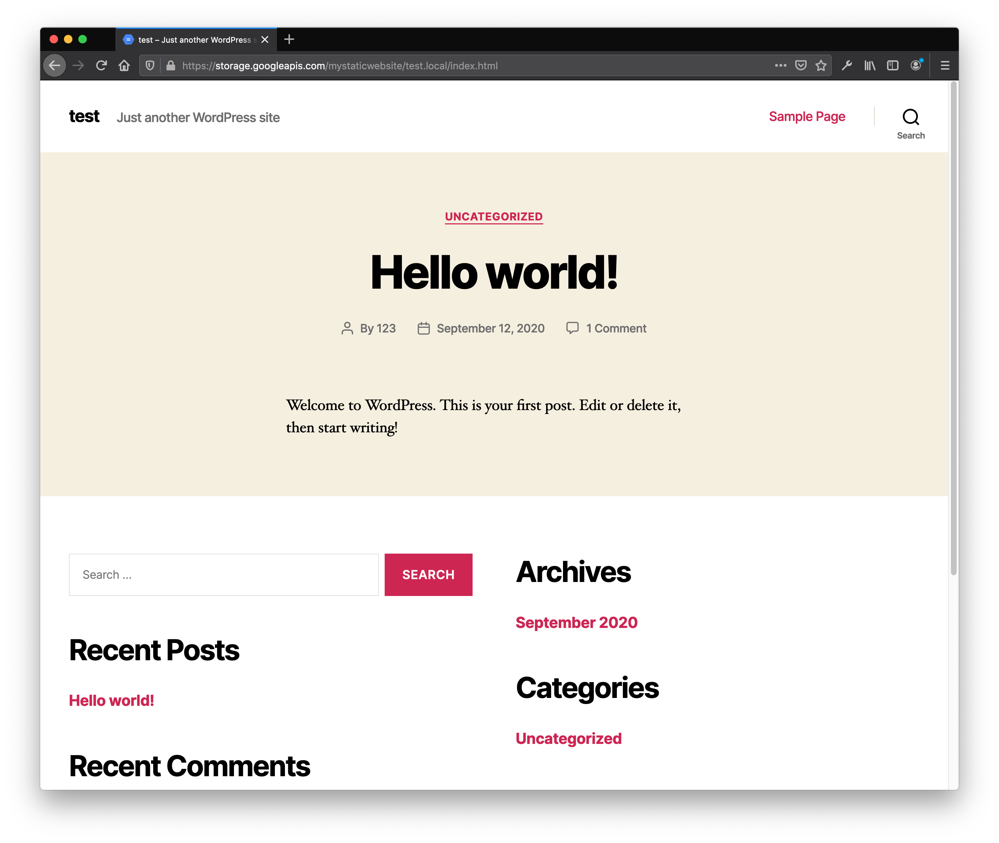
Updating the static mirror
Updating your static mirror with new content will be as simple as going to the mirror’s local directory on your terminal and executinggsutil rsync -R [local-dir] gs://[bucketname] every time.
3 - Hosting on GitHub
A guide on hosting a static website on GitHub.
Required expertise level : Intermediate
Platform : Any
Last tested and confirmed : January 2022
GitHub is a software development platform using Git version control system, and it provides the ability to serve static web pages through GitHub Pages service.
Note
GitHub provides an easy step-by-step guide on how to host a static website on their platform. The guide is available in English, so, in order to avoid redundancy we’ll just refer to it here and add a translated version for every available language in our documentations.Install Git
-
MS Windows
- Download and install the official installation file
- Install using Chocolatey windows package manager
choco install git
-
Gnu/Linux
- Normally, you will fine Git package available in your distribution software repositories, in that case you can simply use your package manager to install it directly. ex:
apt install git
- Normally, you will fine Git package available in your distribution software repositories, in that case you can simply use your package manager to install it directly. ex:
-
macOS
- Install using Homebrew package manager.
brew install git
- Install using Homebrew package manager.